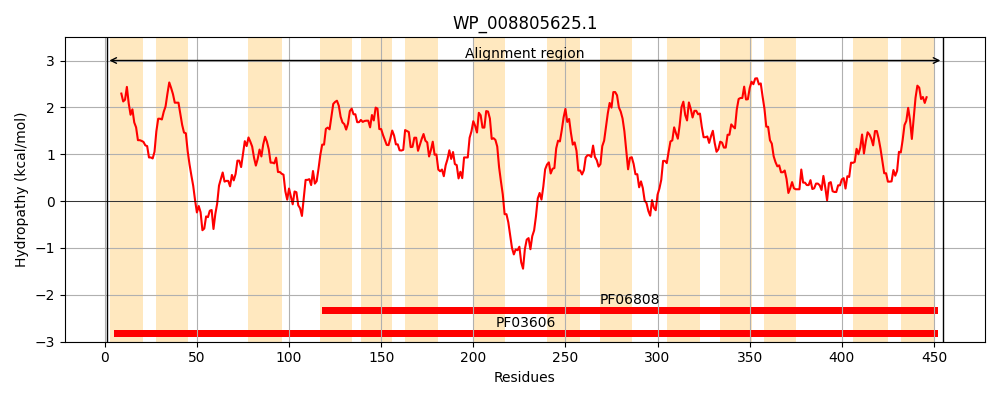
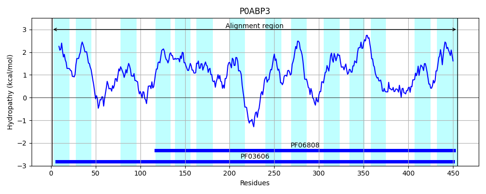
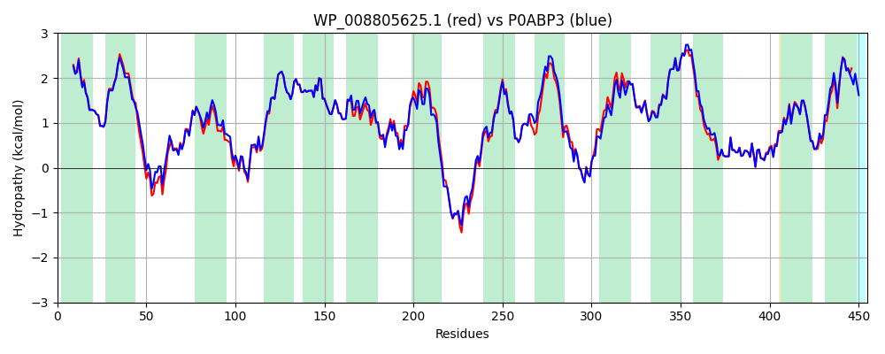

Hit Accession: P0ABP3
Hit TCID: 2.A.61.1.1
Hit Description: gnl|BL_ORD_ID|8721 gnl|TC-DB|P0ABP3|2.A.61.1.1 Anaerobic C4-dicarboxylate transporter dcuC - Escherichia coli.
Mach Len: 455
e:0.000000
Query TMS Count : 14
Hit TMS Count: 14
TMS-Overlap Score: 12.950000
Predicted Substrates:None
BLAST Alignment:
Score: 2067 , Bit scores: 800 bits, E-value: 0.0e+00, Alignment length: 455, Percentage identity: 90
Query: 1 MLTFVEILIGIVVIVGVARYIIKGYSATGVLFVGGLILLIVSALLGHKVLPGNTDSTGYSATDIIEYIKILLMSRGGDLGMMIMMLCGFATYMTHIGANDMVVKLASKPLRYINSPYLLMIAAYFVACLMSLAVSSATGLGVLLMATLFPVMVNVGISRGAAAAICASPAAIILSPTSGDVVLAAKAAEMPLIDFAFKTTLPISIAAIICMAIAHFFWQRYLDKKENISHEMLDVNDITTTAPALYAILPFTPIIGVLIFDGKWGPELHIITILVGCMLLAAILEFLRGFNTKNVFSGLEVAYRGMADAFAGVVMLLVAAGVFAQGLSTIGFINGLISIATSFGSASIILMLVLVILTMLAAMTTGSGNAPFYAFVEMIPKLAHSSGINPAYLSIPMLQASNLGRTISPVSGVVVAVAGMAKISPFEVVKRTSVPVMVGLLVVIIATEILVPGSA 455
MLTF+E+LIG+VVIVGVARYIIKGYSATGVLFVGGL+LLI+SA++GHKVLP + STGYSATDI+EY+KILLMSRGGDLGMMIMMLCGFA YMTHIGANDMVVKLASKPL+YINSPYLLMIAAYFVACLMSLAVSSATGLGVLLMATLFPVMVNVGISRGAAAAICASPAAIIL+PTSGDVVLAA+A+EM LIDFAFKTTLPISIAAII MAIAHFFWQRYLDKKE+ISHEMLDV++ITTTAPA YAILPFTPIIGVLIFDGKWGP+LHIITILV CML+A+ILEFLR FNT+ VFSGLEVAYRGMADAFA VVMLLVAAGVFAQGLSTIGFI LISIATSFGSASIILMLVLVILTMLAA+TTGSGNAPFYAFVEMIPKLAHSSGINPAYL+IPMLQASNLGRT+SPVSGVVVAVAGMAKISPFEVVKRTSVPV+VGL++VI+ATE++VPG+A
Sbjct: 1 MLTFIELLIGVVVIVGVARYIIKGYSATGVLFVGGLLLLIISAIMGHKVLPSSQASTGYSATDIVEYVKILLMSRGGDLGMMIMMLCGFAAYMTHIGANDMVVKLASKPLQYINSPYLLMIAAYFVACLMSLAVSSATGLGVLLMATLFPVMVNVGISRGAAAAICASPAAIILAPTSGDVVLAAQASEMSLIDFAFKTTLPISIAAIIGMAIAHFFWQRYLDKKEHISHEMLDVSEITTTAPAFYAILPFTPIIGVLIFDGKWGPQLHIITILVICMLIASILEFLRSFNTQKVFSGLEVAYRGMADAFANVVMLLVAAGVFAQGLSTIGFIQSLISIATSFGSASIILMLVLVILTMLAAVTTGSGNAPFYAFVEMIPKLAHSSGINPAYLTIPMLQASNLGRTLSPVSGVVVAVAGMAKISPFEVVKRTSVPVLVGLVIVIVATELMVPGTA 455 | Protein Hydropathy Plots: |
|---|
|  |  |
Pairwise Alignment-Hydropathy Plot:
|
|---|
|  |